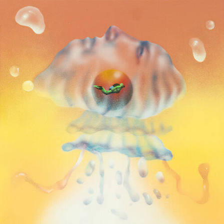

Âm nhạc & nghệ thuật
Một chút mơ màng để giữ trí tò mò
Em thích vẽ, chơi guitar và lắng nghe những ban nhạc Đài Bắc như Wendy Wander, Sunset Rollercoaster. Những giai điệu ấy tạo cho em khoảng lặng để quan sát cảm xúc, nuôi trí tưởng tượng và tìm chất liệu sáng tạo cho việc học lẫn việc dạy.